A day in London
Having met Mum and Dad at Kings Cross, we headed off to St Paul's and stopped in Paternoster Square for a cup of tea at the newly opened Starbucks. We then went for a walk around the outside of St Paul's and marvelled at the workmanship and effort that must have gone into building it.
We walked down to the river, and across the Millennium Bridge before heading into the Tate Modern. We didn't go into any of the galleries on this trip, but did admire the airy nature of the Turbine Hall.
We walked along the river bank towards County Hall, and the London Eye. We collected our tickets, and as we were a little early we stopped for a drink and leg rest before going and joining the queue at the "boarding gate". After a half hour or so queue we got on to our capsule and enjoyed our 35 minute "flight". We had been fortunate with the weather and had some great views.
We got off the Eye and headed off across the Hungerford pedestrian Bridge, past Trafalgar Square and towards Covent Garden. We stopped for some much needed food at Browns Restaurant. We had just enough time to head for a walk around Covent Garden market before heading back to Kings Cross and getting Mum and Dad back on their train.
(31 images.)
Back to index
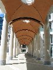
Paternoster Square |
St Paul's Cathedral | 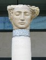
Head Statue | 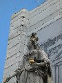
Pigeon in crown |

St Paul's Cathedral II |
St Paul's Cathedral III | 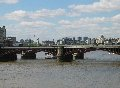
Down the river | 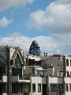
Gherkin |
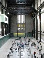
Tate Modern | 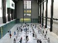
Tate Modern II | 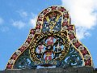
London, Chatham and Dover Railway | 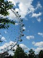
London Eye |
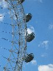
London Eye II | 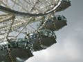
London Eye III | 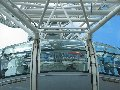
London Eye IV | 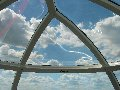
London Eye V |
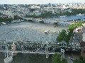
View from the Eye | 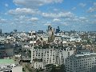
View from the Eye II | 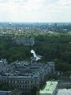
View from the Eye III | 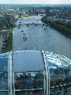
View from the Eye IV |
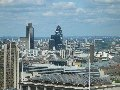
View from the Eye V |
View from the Eye VI | 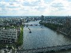
View from the Eye VII | 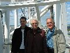
Family |
Richard | 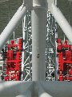
Structure | 
Shadow | 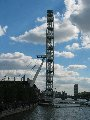
London Eye and County Hall |
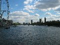
Eye, Westminster and Thames | 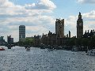
Westminster | 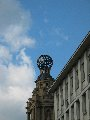
Coliseum |
Back to index